1. Image/Video
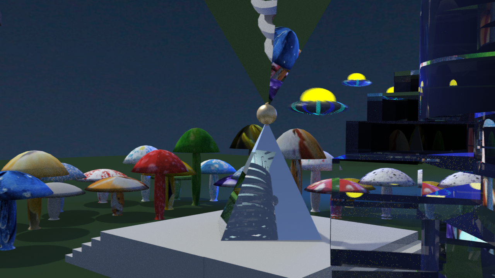
2. Video
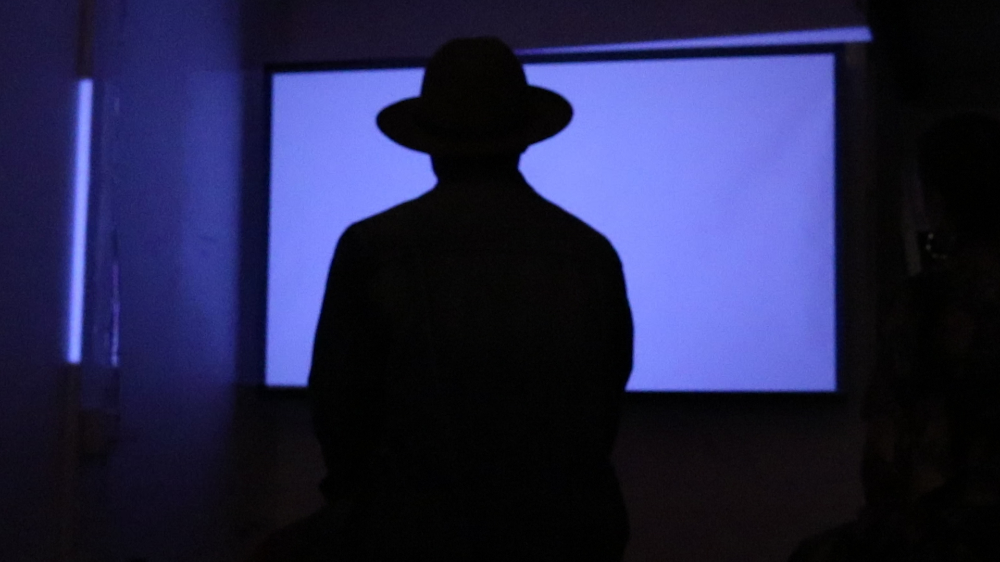
3. Image

4. Animation
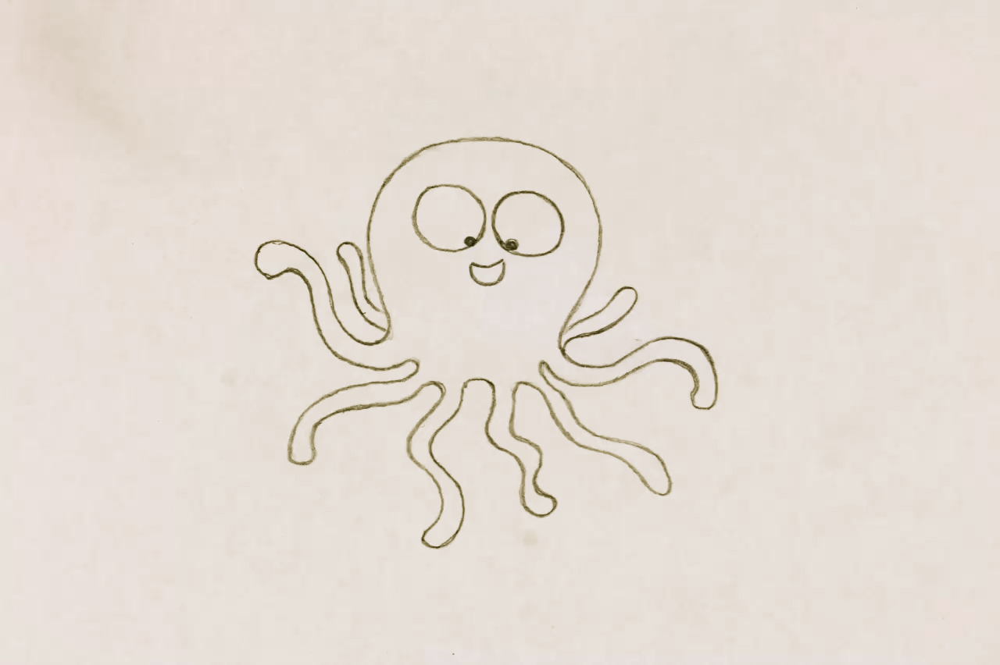
Yoko Honda is an artist who creates digital paintings and prints centered around 1980’s city and beach culture. I love her nostalgic LA style and although it is clearly 80’s influenced there is also a very contemporary feel to her art. I think the simple website design is perfectly suited to show off her pieces and I really like the contrasting black background.
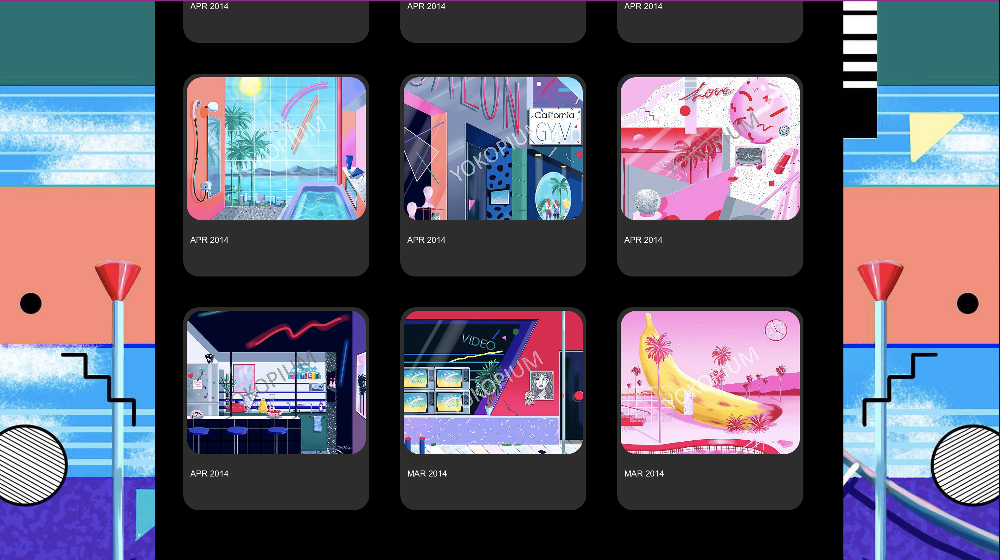
Alicia Haberman is hard to pin down with one concept because she does illustrations, graphics, and set design. Her website exhibits so much work and I find it inspiring because she spans different fields and jobs yet still has a cohesive and easily navigable website. I like it because I think I will eventually showcase many mediums and it is nice to see such an organized, informative, and intriguing visual style.
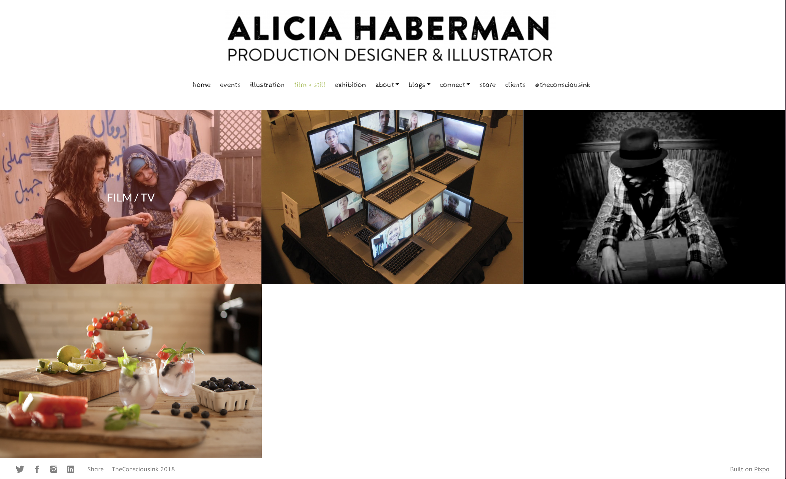
My absolute favorite website is that of Robby Leonardi, who hosts an “interactive resume” and illustrated portfolio for his work. His concept is playful, cartoony character animation and cute design. This is the most inspiring to me because it is similar to what I hope my cartoon and animation style can be one day. Not only do I like his graphics, but the website is literally explorable. You move the character “Robby Leonardi” through likes/dislikes, skills, awards, and more. It is a fun and extremely creative way to showcase his artistic skills.
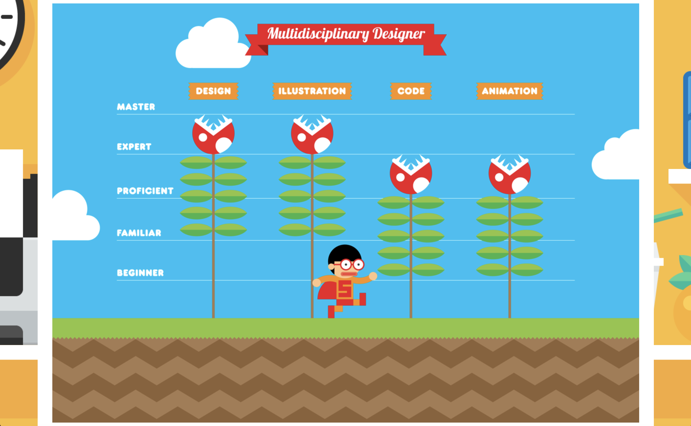
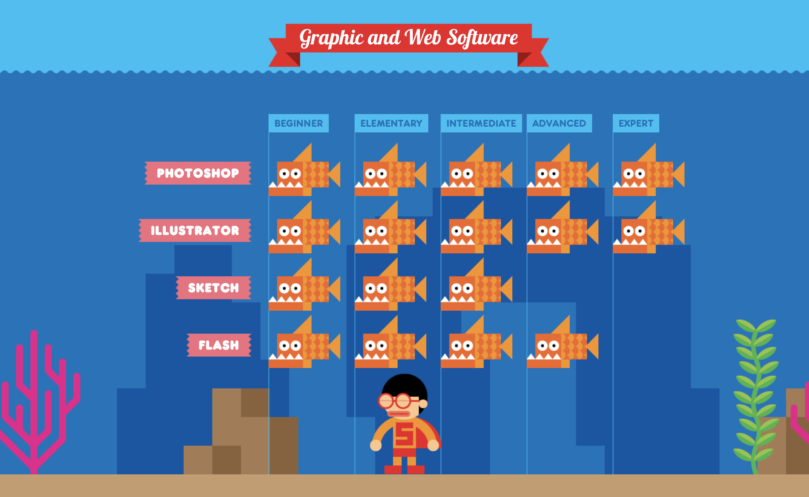
The portfolio of Tao Tajima, a director and filmmaker, is also very creative as a website. It’s motion graphics and floating images reflect the perfect style for that of someone who makes pictures come to life. His concept is clean cut and professional, with just a hint of flashy. I like the website a lot because of the way he coded his images and pages to constantly flow and move, I’d like to learn how to do this.
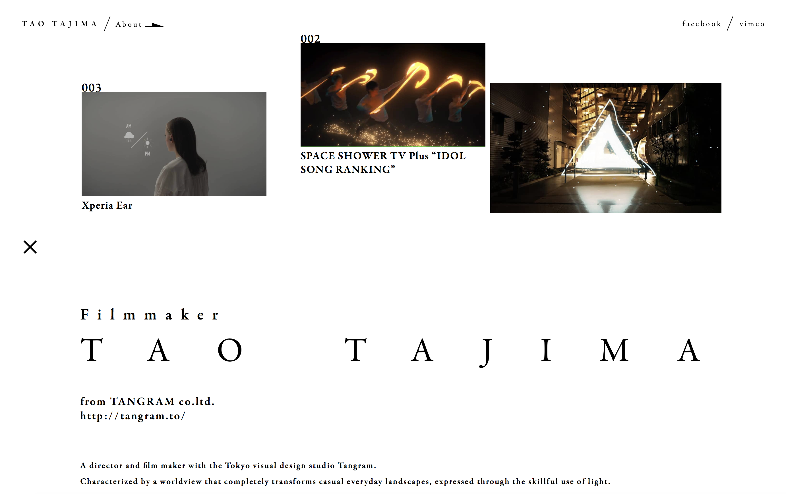
My work
1. Image/Video
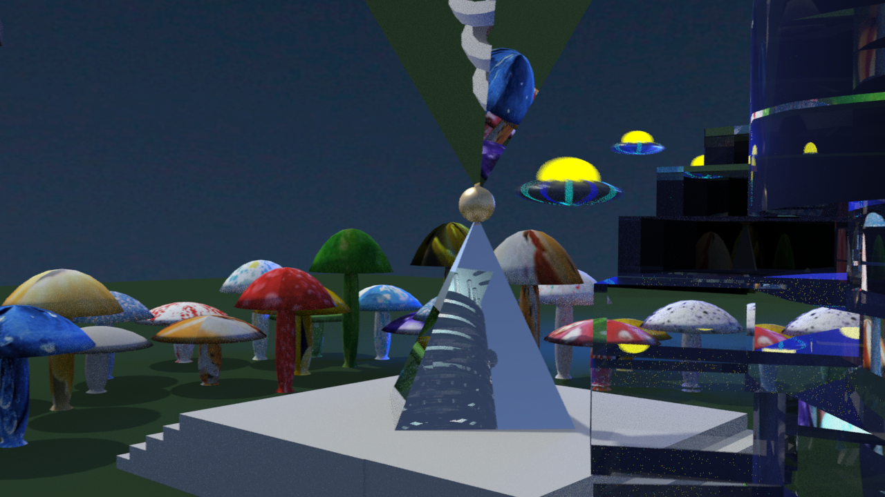
2. Video
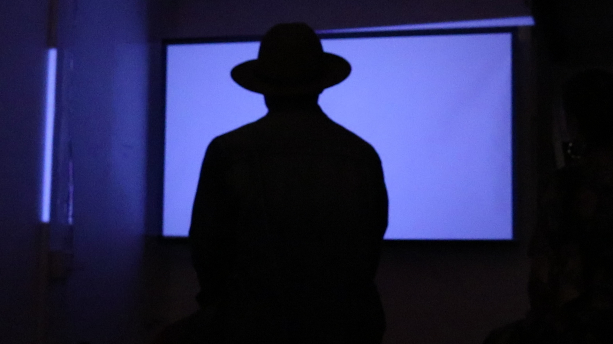
3. Image
4. Animation
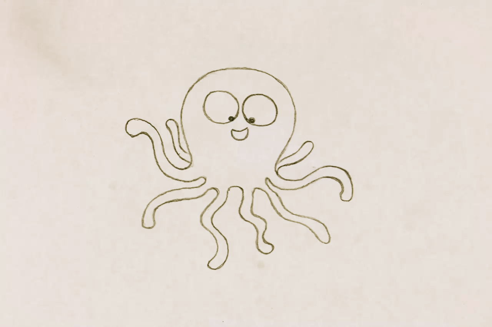
Sitemap
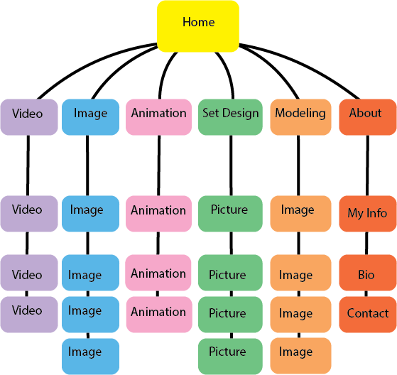